1er juillet 2026
Le droit au logement, une priorité pour Québec solidaire // 1,200 vacant housing units in NDG—that’s outrageous! The right to housing is a priority for Québec solidaire [English follows]
Hier, Radio-Canada publiait une enquête où on apprenait que près de 100 000 logements sont vacants au Québec. Rien que dans Notre-Dame-de-Grâce, on estime qu’il y en a presque 1200! À Québec Solidaire, nous proposons d’appliquer une taxe sur les logements vacants, facilitée par un vrai registre public des loyers, et de s’attaquer frontalement à la spéculation immobilière.
Pourquoi?
Ces pratiques sont le résultat d'un marché immobilier qui encourage les spéculateurs à faire un maximum de profit, au détriment des communautés et des familles. À deux jours du 1er juillet, il y avait encore plus de 3100 familles au Québec qui risquaient de se retrouver à la rue. Il y a déjà 12 000 personnes sans logement au Québec. Il est temps que ça cesse! En plus d’une taxe sur les logements vacants, Québec solidaire propose de :
🛑 Mettre un frein aux hausses de loyers abusives, en gelant les loyers à l'inflation
💯 Traiter 100% du revenu de la vente d'immeubles comme un salaire pour l'impôt, et maintenir l’exemption pour le domicile principal (comme dans les duplex et triplex avec propriétaire occupant)
📝 Surveiller davantage les propriétaires récalcitrants.
Si vous trouvez, vous aussi, qu'il est temps de s'attaquer sérieusement à la crise du logement, n’hésitez pas à nous contacter via l’adresse courriel dans ma bio pour savoir comment vous impliquer!
Yesterday, Radio-Canada published an investigation where we learned that there are over 100,000 vacant housing units in Québec. In NDG alone, we estimate there are almost 1,200 such units! At Québec Solidaire, we are proposing a vacancy tax made possible by a truly public rental registry and to tackle housing speculation head-on.
Why?
These practices are the result of a housing market that favors speculative investors to extract a maximum of profits, to the detriment of communities and families. Only two days before July 1st, more than 3,100 families in Québec were at risk of being forced out of their homes. There are already over 12,000 unhoused people in Québec. It is high time to put an end to this crisis! In addition to a tax on empty housing units, Québec Solidaire is proposing to :
🛑 End abusive rent hikes, by capping rent increases at the level of inflation;
💯 Treat 100% of the revenue from real estate sales just like a salary for tax purposes, while maintaining the exception for occupying owners, like in duplexes or triplexes;
📝 Keep a closer watch on bad landlords.
If you want to help us to take on the housing crisis, don’t hesitate to reach out via the email in my bio to find out how you can get involved!
24 juin 2026
Quelle joie de fêter la Saint-Jean dans mon quartier, au parc Notre-Dame-de-Grâce, en compagnie d’ennedégeois et d’ennedégeoises de toutes origines et de toutes cultures, réunis pour célébrer ensemble notre grand projet commun : le Québec.
Merci à Chantal Lamarre pour son discours qui nous rappelle qu’à NDG comme partout au Québec, notre diversité et notre ouverture font notre richesse et notre force.
Vive NDG, et vive le Québec! Bonne fête nationale à tous et à toutes!
5 juin 2026
C'est le mois des fiertés! Et mon parti c'est Québec Solidaire. Et pour le mois des fiertés, j'ai envie de vous partager une nouvelle venue d'ailleurs, mais qui me touche beaucoup, et qui illustre très bien pour moi ce que ça veut dire, être Solidaire.
Mais avant, je dois vous raconter une histoire.
En 1984, le gouvernement conservateur britannique de Margaret Thatcher mène une guerre violente aux syndicats ouvriers, et particulièrement aux syndicats des mineurs de charbon. Cette année-là, à la marche de la fierté de Londres, la police était curieusement absente (alors qu'elle avait l'habitude de réprimer assez vigoureusement le mouvement).
Ça n'a pas pris longtemps avant que les militant·e·s LGBTQ+ comprennent que la police ne les embêtait pas parce qu'elle était affairée ailleurs, à réprimer les manifestations des mineurs en grève. Une poignée de militants et une militante décident alors de fonder le collectif « Lesbians and Gays Support the Miners » (LGSM), avec l'objectif de récolter des fonds pour soutenir les syndicats de mineurs, alors que la grève dure plus d'un an et que plusieurs communautés ouvrière souffrent lourdement.
Les débuts de LGSM sont difficiles : plusieurs communautés ouvrières aux valeurs plus conservatrices ne sont pas particulièrement enchantés par l'idée de s'allier au mouvement LGBTQ+; réciproquement, plusieurs personnes de la communauté LGBTQ+ ayant grandi et ayant été rejeté par ces communautés plus conservatrices ne sont pas non plus chauds à l'idée de partager les piquets de grève avec des gens qui, pour plusieurs, les ont rejetés toute leur vie. Pourtant le mouvement prend de l'ampleur, parce que les deux groupes reconnaissent que la droite au pouvoir les attaque de la même façon, et qu'ils gagnent à s'unir pour riposter. L'année suivante, ce sont des autobus entiers de mineurs et d'ouvriers de partout au Royaume-Uni qui débarquent à Londres le jour de la Pride, pour manifester aux côtés des militant·e·s LGBTQ+, en reconnaissance du lien de solidarité qui lie ces deux groupes a priori disparates, mais qui se rejoignent dans leur lutte face à un gouvernement inhumain.
En 2026, on observe partout dans le monde des reculs importants concernant les droits des personnes LGBTQ+. Au Royaume-Uni, le parti politique d'extrême droite Reform UK ne cache pas son homophobie. Dans le comté de Durham, le conseil (contrôlé par Reform UK) a complètement coupé les vivres à l'organisation de la marche de la fierté, qui allait devoir être annulée, faute de moyens.
La bonne nouvelle, c'est que la solidarité entre les syndicats de mineurs et la communauté LGBTQ+ est bien vivante. En quelques heures, des syndicats de partout au pays ont réussi à lever assez de fonds pour le défilé. Encore mieux: ils ont amassé plus d'argent que le budget initial prévu -- plus d'argent que le comité organisateur n'en avait jamais eu auparavant!
La Solidarité, c'est pas juste un slogan, une marque, ou le nom de notre parti. La solidarité c'est la somme de tous les petits gestes quotidiens, concrets, qu'on fait pour défendre les communautés avec qui nous ne partageons certes pas tout, mais avec qui nous avons l'essentiel en commun: nous vivons ensemble, nous grandissons ensemble, et nous faisons face, ensemble, au vent de droite. Je ne suis ni autochtone, ni immigrante, ni palestinienne, ni démunie. Mais je suis transgenre, je suis locataire, je vis avec un handicap fonctionnel... Et je suis solidaire plus que jamais. Je refuse de laisser les petits politiciens de droite s'attaquer, non seulement à mes droits, mais aussi aux droits de toutes mes concitoyennes et de tous mes concitoyens, simplement parce que le populisme c'est payant. Ça suffit!
26 mai 2026, 8:40
L'assemblée d'investiture de Québec Solidaire - NDG aura lieu le jeudi 28 mai à 18:30 au centre communautaire Walkley (6650 ch. Côte-St-Luc.. Ce sera une excellente occasion de nous retrouver entre solidaires et d'échanger sur les enjeux électoraux et la campagne à venir dans NDG.
Au plaisir de vous y rencontrer!
Élise Davignon est une fière résidente de Notre-Dame-de-Grâce animée par des valeurs progressistes et déterminée à promouvoir le projet de Québec Solidaire pour une société plus juste.
Passionnée de politique depuis l’ère Charest dans laquelle elle a grandi, l’engagement a toujours été au cœur des préoccupations d’Élise. Ses valeurs de justice sociale, d’équité et de partage ont guidé ses projets et ses initiatives comme chercheure, enseignante et vulgarisatrice de mathématiques, à l’Université de Montréal et ailleurs; sa rigueur de mathématicienne nourrit son implication militante depuis son passage dans le mouvement étudiant, et aujourd’hui à Québec Solidaire.
Élise est inspirée quotidiennement par la communauté diverse et bouillonnante qui caractérise sa circonscription – l’une des plus multiculturelles du Québec. Elle est également confrontée chaque jour aux défis auxquels font face les personnes les plus vulnérables de cette communauté: la crise du logement, l’itinérance, l’accès difficile aux soins de santé, et le manque de ressources en francisation pour les nouveaux arrivants, qui sont nombreux dans NDG. C’est pour s’attaquer à ces enjeux, qui ont des échos partout au Québec, qu’Élise est plus que jamais déterminée à faire rayonner la proposition solidaire.
Face à la montée du cynisme et de l’extrême droite, Élise oppose un message empreint d’espoir et résolument optimiste: la diversité et l’inclusivité sont nos forces, et les problèmes réels auxquels nous faisons face sont surmontables, à condition que nous travaillions ensemble.Si, comme Élise, vous croyez que nous pouvons prendre les moyens de nos ambitions, n’hésitez pas à la contacter sur les réseaux sociaux pour savoir comment soutenir sa campagne.
Chers électrices; chers électeurs,
Par la présente, je dépose ma candidature à l’investiture solidaire pour l’élection générale provinciale de 2026 dans la circonscription de Notre-Dame-de-Grâce, où je porterai fièrement les couleurs de Québec Solidaire, d’abord à titre de militante, quoiqu’il arrive, mais aussi, éventuellement, à titre de candidate, si je reçois l’appui des membres de la circonscription.
Mon intérêt pour la politique a grandi, comme moi, pendant l’ère Charest, qui s’est amorcée voilà bientôt vingt-cinq ans. Même jeune ado, j’avais constaté le large fossé entre mes valeurs et celles qui animaient ce gouvernement. Si ma formation et carrière ne m’ont pas conduite naturellement à la politique, l’engagement et le militantisme ont néanmoins fait partie intégrante de ma vie à chaque étape de celle-ci, non seulement de façon explicite à travers mon implication dans le mouvement étudiant puis à Québec Solidaire, mais également de façon implicite à travers mon travail et tous mes projets.
J’ai du cœur au ventre, et le feu au cul. Face aux changements climatiques qui ont déjà des effets dévastateurs sur les plus vulnérables; face aux violentes inégalités entre les mieux et les moins nantis qui s’accroissent; face aux besoins criants en santé et en éducation; face à la crise du logement, les gouvernements des trente dernières années n’ont rien offert que d’ajouter toujours plus de S aux sigles des organismes publics, et, plus récemment, se sont mis à pointer du doigt l’immigration et les personnes transgenres afin qu’on détourne le regard de leur négligence et de leur mépris. Les néolibéraux de partout dans le monde ont réussi à convaincre un vaste pan de la population que le pouvoir politique est limité, inefficace, bon seulement à agiter frénétiquement leurs drapeaux dans des fanfares nationalistes qui sonnent creux. On est fiers d’être Québécois, parce qu’au Québec, « c’est comme ça » …
Pourtant notre histoire regorge de preuves tangibles de l’immense pouvoir que détiennent les gouvernements pour améliorer concrètement la vie des gens. Parmi les gestes qui ont défini la société québécoise, qui ont marqué sa différence et créé notre fierté et notre identité, un grand nombre ont été posés par des gouvernements qui n’avaient pas peur d’agir. Ce sont les gouvernements qui ont nationalisé l’hydroélectricité en créant Hydro-Québec; les gouvernements aussi qui ont adopté la charte de la langue française, créé de toutes pièces des réseaux de santé et d’éducation publics qui ont longtemps fait l’envie du monde.
Les problèmes auxquels nous faisons face aujourd’hui ne sont pas endémiques; ils ne sont pas insolubles ou trop complexes. Ils ne l’étaient pas pour la génération de nos parents ou de nos grand-parents dans les années ‘60, qui s’y sont attaqués frontalement; ils ne le sont pas plus pour nous, parce qu’on n’est pas moins brillants qu’eux l’étaient. C’est ça, la principale conviction qui anime mon engagement politique: au tout départ, je crois fermement que les choses peuvent s’améliorer. Ç’a l’air niaiseux, mais je pense que c’est important que ce soit clair: on peut. On peut avoir un système de santé qui marche. On peut avoir des écoles égalitaires qui offrent la meilleure éducation du monde. On peut s’adapter aux changements climatiques sans laisser personne derrière.
Tout ça est possible. On rêve autant en couleurs que ceux qui ont imaginé Hydro, les CÉGEP, les CLSC, l’Université du Québec, les garderies subventionnées, le marriage gai, le droit à l’avortement, le métro... On rêve autant en couleur que Denis Villeneuve quand il rêvait de gagner un Oscar; que Gilles Vigneault quand il rêvait de faire compétition à Happy Birthday avec une chanson de chez nous. Tous des nuages qu’on a pelletés, tous des rêves qu’on a eus. Toutes des affaires qui, finalement, sont autant de réalités où on puise une vraie fierté québécoise. C’est parce que je veux qu’on continue d’avoir de bonnes raisons d’être fiers, que je pense que ça vaut la peine de continuer de mettre de l’avant le projet et les valeurs solidaires. C’est pour porter ce message-là, que je me présente
J’espère que vous y croyez autant que moi.
Solidairement,
Élise Davignon
Pour toute question ou pour savoir comment vous impliquer, vous pouvez écrire à elise.davignon.2026@quebecsolidaire.net
© Élise Davignon, 2026. Tous droits réservés.